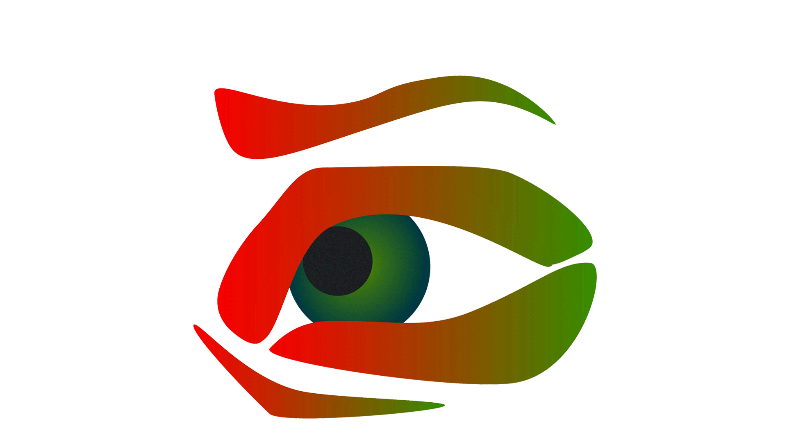
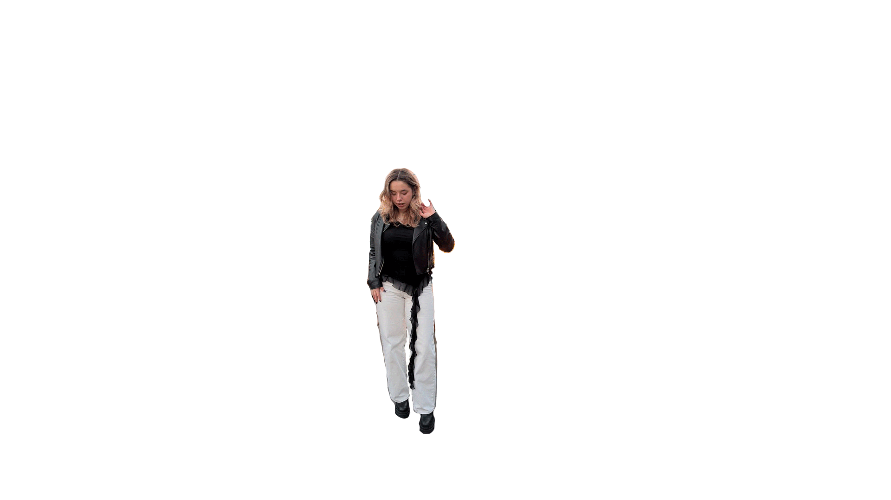

PROJECT GALLERY / 2026


About This Project
HOMEWORK 04
Creating the two GIF animations was an interesting experience because I learned how to bring static images to life using Adobe Photoshop. Before this assignment, I had limited experience with frame-by-frame animation, so I had to learn how layers and the Timeline panel work together. For the first GIF, I used my eye illustration from Illustrator and created different eyelid positions to make it blink. The most challenging part was organizing the layers and making sure the correct eye state appeared in each frame. I learned that even small changes in the eyelid position can make the animation look more realistic. Adjusting the frame timing also helped me understand how animation speed affects the final result. For the second GIF, I used a photograph and the Puppet Warp tool to create movement. I found this part more challenging because I had to move different body parts carefully while keeping the person's shape natural. Creating several poses helped me understand how movement can be created from a single photograph. Overall, this assignment helped me develop my Photoshop skills and better understand animation principles. I learned how important layers, timing, and frame organization are when creating GIFs. I also became more comfortable experimenting with different tools and solving technical problems. Although some steps took time and required patience, I enjoyed seeing my illustrations and photographs turn into animations. This project showed me how simple techniques can create engaging visual effects.
COURSE
MEDPL150 / Intro to Digital Media
SOFTWARE
Adobe Photoshop
PROJECT
Homework 07 / Animated GIFs